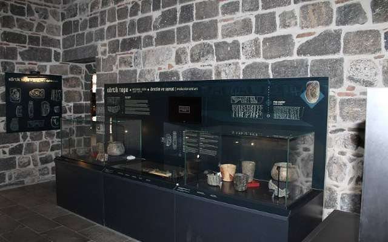

पहला दिन दियारबकिर में: पुरातत्व संग्रहालय और जाहित सीत्की तारानजी व ज़िया गोकआल्प के घर, शाम को बातमान संग्रहालय। दूसरा दिन: दजला किनारे हसनकेयफ़ का नया संग्रहालय, फिर पत्थर के घरों वाला मार्दिन, मार्दिन संग्रहालय और बीज़ान्टिन सीमा-नगर दारा।
दिन 1

दियारबाकिर पुरातत्व संग्रहालय शहर के ऐतिहासिक इचकाले (भीतरी क़िले) की पुनर्स्थापित इमारतों के बीच है और ऊपरी दजला बेसिन के हज़ारों वर्षों के इतिहास को बताता है। इस…

जाहित सित्की तारांजी संग्रहालय दियारबाकिर के ऐतिहासिक सूर ज़िले का वह पारंपरिक घर है जहाँ यह कवि जन्मे, जिनकी कविता ‘पैंतीस वर्ष’ पीढ़ियों से प्रिय है। काले बेसाल्ट की…

ज़िया ग्योकाल्प संग्रहालय दियारबाकिर के उस घर में है जहाँ तुर्की बौद्धिक इतिहास की महत्वपूर्ण हस्ती, समाजशास्त्री और लेखक ज़िया ग्योकाल्प जन्मे और बड़े हुए। आँगन वाला…
मेहमत जाबिर आल्पेर पुरातत्व संग्रहालय बातमान का पुरातत्व संग्रहालय है, जो दजला (टिगरिस) बेसिन के हज़ारों वर्षों के इतिहास को बताता है। क्षेत्र की बाँध परियोजनाओं से…
दिन 2

दजला किनारे का हसनकेफ़ हज़ारों वर्षों तक बिना रुके आबाद रहा, जहाँ चट्टानों में काटे गए गुफा-आवास और मध्यकालीन स्मारक थे। अर्तुकी वंश के समय यह एक शानदार केंद्र था और…

मार्दिन संग्रहालय पुराने मार्दिन के पत्थर के घरों के बीच 19वीं सदी के अंत में सीरियाई कैथोलिक पितृसत्ता-भवन के रूप में बनी एक सुरुचिपूर्ण इमारत में है। पीले चूना-पत्थर,…

मार्दिन के दक्षिण-पूर्व में स्थित दारा छठी सदी की शुरुआत में सासानी फ़ारस के विरुद्ध बीजान्टिन साम्राज्य द्वारा बसाया गया एक शक्तिशाली सीमांत छावनी-नगर था। मोटी…
आपकी योजना में मदद के लिए दिन-ब-दिन तैयार मार्ग। समय अनुमानित हैं; यात्रा से पहले खुलने का समय और सड़क की स्थिति जाँच लें।